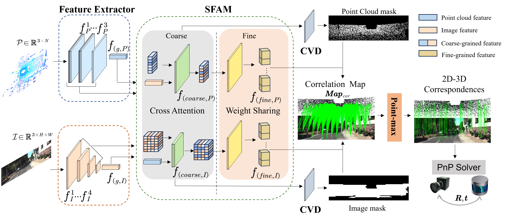
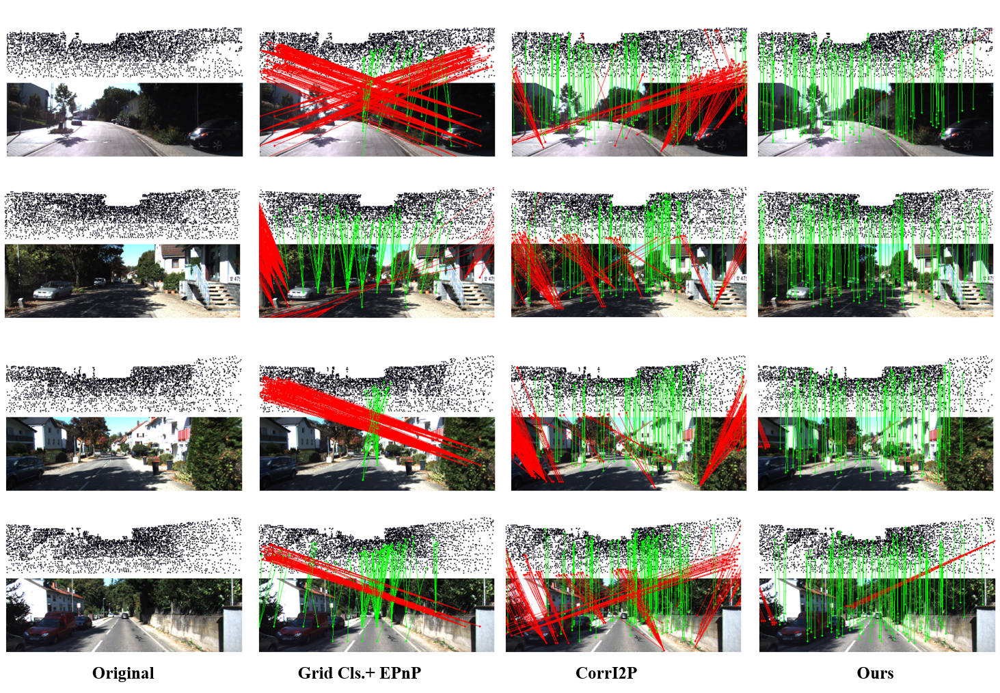

|
Image to Point Cloud Registration by Learning the Underlying Alignment Feature Space from Pixel-to-Point Similarities Yunda Sun, Lin Zhang, Zhong Wang, Yang Chen, Shengjie Zhao School of Software Engineering, Tongji University, Shanghai, China |
Introduction
This is the website for our paper "Image to Point Cloud Registration by Learning the Underlying Alignment Feature Space from Pixel-to-Point Similarities. "

Source Codes
Qualitative experiment
The following is the demo picture demonstrating the performance of our I2P_ppsim framework for image to point cloud Registration.
Last update: Jan. 2, 2024